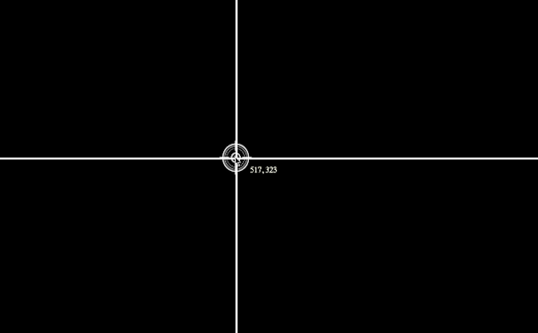

- 


-
"I was born and raised in South Korea. I was a teacher in my home city of Incheon. While teaching I met my future husband who was working as the only foreign teacher in the school. As he sometimes struggled to understand Korean curture and couldn't find ingredients at the supermarket, I helped him a lot and we became close.
After several years together we decided to move to England. So here I am now. 😊" -
"I came to the UK 6 years ago with my husband. I had only visited here on holiday a few times so it was a big step for me to relocate and leave my family and friends behind.
When I arrived in England, I began to work as a florist, creating floral arrangements for individuals and events.
From there I moved to office-based work, researching and creating reports for Korean companies to expand their horizons. This has led me to where I am today, creating web applications with aim of helping others to achieve their digital goals while developing my skillset." "I studied Home Economics Education at university in Seoul. I had decided to learn HEE because everyone told me that being a teacher is good for girls because we can look after family better while we have stable jobs. In addition, I really liked my home economics teacher. She was my role model becuase she was fashionable and looked very cool.
Looking back now I realised that my world was so limited. At that time in Korea, girls were taught home economics but not technology or computer science. I graduated girl's middle/high school and I wasn't given options to select technology or computer science in the school's curriculum. I only learned computer science 1 hour a week and only in the 1st grade of middle school while students at the boy's school were learning technology and computer science 3-4 hours a week.
Now I think I could have had different career path if I was given choices like the boys. Becuase I made my decsion to learn HEE without hesitation despite being offered a place studying civil engineering at a different universitiy. ""When I have some spare time I like doing yoga. As I spend a lot of time sitting to do coding and do my work, I realised that I need to keep balance of my body and proper exercise. I love doing yoga becuase I enjoy the time I can put every thoughts and worries away while I do it. It also keeps my body fit!
During lockdown, I found lots of good yoga tutorials on Youtube and follow them regulary and it has been really good. But I can't wait to join a yoga class in a studio!"
My mini projects
Why
Why